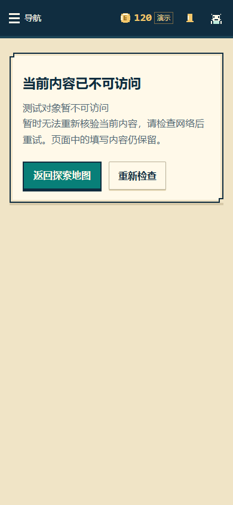
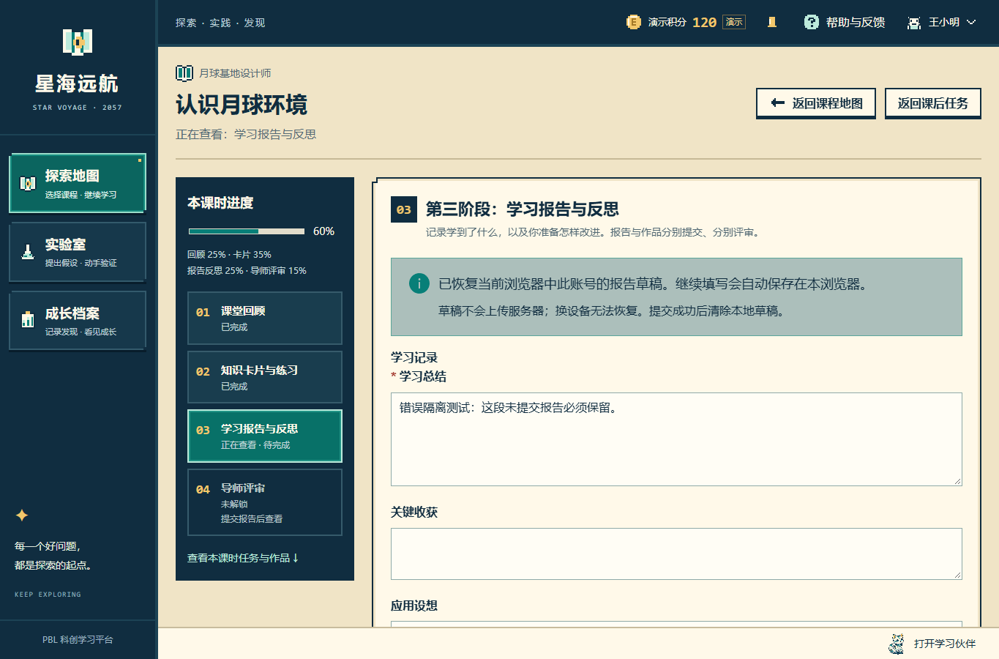

这两张图片来自修复后的真实 Edge 浏览器。课程、账号和报告文字均为隔离 SQLite 的测试资料，积分仍是本机演示。未重拍历史图集。
1. 核验网络失败：继续阻断，并保留再次尝试

390 × 844。先用真实接口验证课时失效；随后模拟 403 与网络中断。失败没有被视作成功，仍可点击“重新检查”。
2. 真实核验通过：恢复课时与原报告草稿

1365 × 900。恢复全过程未使用整页刷新、新标签或重新登录。原报告草稿按现有账号与课时规则恢复，未新增存储，也未提交报告。
真实 404、模拟 403、报名移除、核验中的阻断，以及课程撤回的断言见 权限回归日志与结果表。截图本身不代替业务断言。